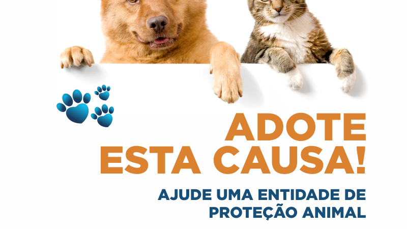

ONGs Que Protegem Animais
ONG é a sigla para “Organização Não Governamental”, uma entidade privada, sem fins lucrativos, que atua
no interesse público de forma independente do Estado. Em geral, ela funciona por projetos e ações
sociais financiados por doações, editais e parcerias, com gestão transparente e responsabilidade legal.

Instituto Caramelo
Fundado em fevereiro de 2015, a partir da união de um grupo de pessoas em prol do propósito de cuidar
bem e adotar bem cada animal, o Instituto Caramelo atua principalmente no resgate de animais feridos ou
em situação de risco, recuperação e adoção. Mantemos um abrigo com cerca de 300 animais, entre cães e
gatos, todos resgatados das ruas, onde eles são protegidos, tratados, alimentados e aguardam pela chance
de serem adotados.
O Instituto Caramelo fica em Ribeirão Pires, na região metropolitana, em um terreno de 27.000 metros
quadrados. Há centro cirúrgico com atendimento veterinário 24 horas, núcleo de fisioterapia,
adestramento para tratamento psicológico, 5 áreas de soltura, 35 canis, 4 gatis e uma equipe de mais de
40 profissionais que se doam por completo para que o abrigo seja apenas uma fase de passagem na vida dos
bichos. São necessários cerca de 300 mil reais por mês para sustentá-lo e são as doações, parcerias e
vendas na loja que tornam esse sonho possível.
Instituto Ampara Animal
Somos uma organização não-governamental sem fins lucrativos, 100% brasileira, fundada e dirigida por
mulheres visionárias. Nascemos em 2010 e em 2013 recebemos do Ministério da Justiça o título de OSCIP
(organização da sociedade civil de interesse público), comprovando nossa seriedade e transparência.
Em 2015 nos tornamos a maior e mais importante organização de proteção e defesa animal do Brasil, e no
ano de 2019 entramos para a lista das 100 melhores ONGs do país, sendo destaque na região sudeste.
Visamos transformar a sociedade através de ações ativas e preventivas focadas em advocacy, educação e
sensibilização sobre os direitos dos animais.
SUIPA (Sociedade União Internacional Protetora dos Animais)
A SUIPA foi inaugurada em 27 de abril de 1943. Inicialmente, chamava-se Sociedade União Infantil
Protetora dos Animais. Isto porque os protetores que formaram esta Sociedade contavam com a ajuda de
seus filhos no tratamento dos cães doentes que eram recolhidos das ruas. Os animais eram atendidos em um
pequeno barracão localizado na antiga Avenida Castelo Branco que passou a chamar-se Avenida Suburbana.
Atualmente, a conhecemos como Avenida Dom Hélder Câmara. Naquela época, a região era rural e desprovida
de qualquer recurso. Com o passar dos anos, muitas famílias se instalaram nas proximidades da SUIPA.
Surgiram, então, as comunidades do Jacarezinho e de Manguinhoscom mais de 300 mil moradores, como
podemos observar nos dias de hoje.
A partir do final dos anos 1950, a SUIPA se consolidou como uma entidade organizada e influente na
proteção animal, contando com a participação de importantes intelectuais e atuando ativamente na defesa
dos direitos dos animais, por meio de ações diretas e mobilização junto às autoridades para o
cumprimento das leis; ao longo do tempo, manteve-se como uma instituição sem fins lucrativos, não
eutanásica, oferecendo abrigo e assistência veterinária acessível, cuja renda ajuda a sustentar suas
atividades.